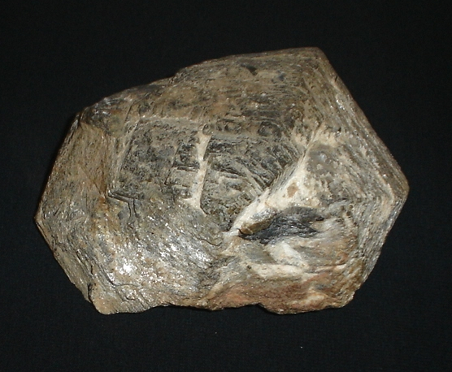

| Dureza |
Imagen |
Mineral |
Se raya con /Raya a |
| 1 |
 |
Talco |
Se puede rayar fácilmente con la uña |
| 2 |
|
Yeso |
Se puede rayar con la uña con más dificultad |
| 3 |
 |
Calcita |
Se puede rayar con una moneda de cobre |
| 4 |
|
Fluorita |
Se puede rayar con un cuchillo de acero |
| 5 |
 |
Apatito |
Se puede rayar difícilmente con un cuchillo |
| 6 |
 |
Ortosa |
Se puede rayar con una lija para el acero |
| 7 |
 |
Cuarzo |
Raya el vidrio |
| 8 |
 |
Topacio |
Rayado por herramientas de carburo de wolframio |
| 9 |
 |
Corindon |
Rayado por herramientas de carburo de silicio |
| 10 |
 |
Diamante |
El material más duro en esta escala (rayado por otro diamante) |